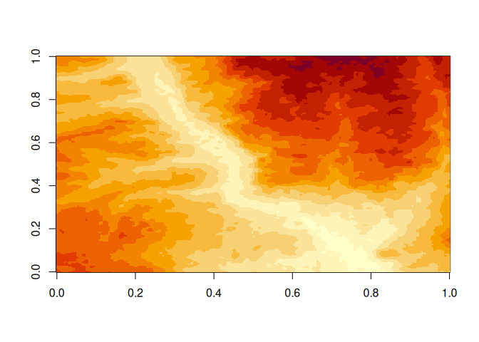
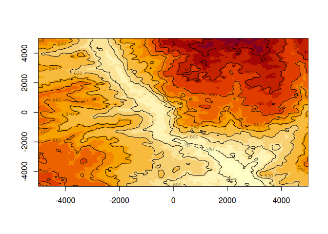
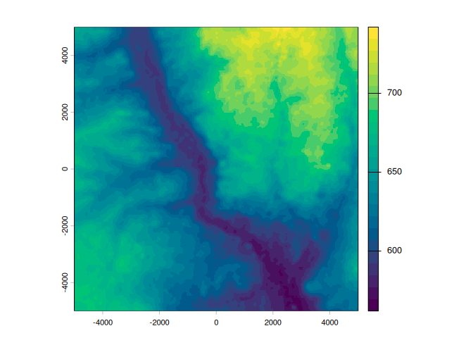

Overview
The vapour package provides access to the basic read functions available in GDAL for both raster and vector data sources.
The functions are deliberately lower-level than these data models and provide access to the component entities independently.
For vector data:
- read access to fields alone
- read raw binary geometry alone, or geometry in text forms (GeoJSON, WKT, GML, KML).
- read access to the extent of geometries
- helper functions to summarize feature identity and geometry status
- limit/skip control on records read
- execution of OGRSQL with control of SQL dialect
- read in the context of a bounding box spatial filter can be applied via the
extentargument
For raster data:
- read access to the list of available rasters within a collection source (subdatasets).
- read access to structural metadata for individual raster sources.
- read access for raw data using GDAL’s RasterIO framework and its dynamic image decimation / replication resampling algorithms.
- read access for raw data using GDAL’s Warper framework and its dynamic image warping, a superset of the RasterIO capabilities.
The warper works for data sources that contain overviews (or pyramid levels-of-detail) as it automatically chooses an appropriate level for the request made, files, urls, database connections, online tiled image servers, and all the various ways of specifying GDAL data sources.
The workflows available are intended to support development of applications in R for these vector and raster data without being constrained to any particular data model.
Installation
From CRAN
Install from CRAN, this should work on MacOS and Windows because CRAN provide binaries.
install.packages("vapour")From conda-forge

Vapour is available on conda-forge as r-vapour and can be installed with Pixi:
or with conda:
The conda-forge package installs all its dependencies from conda-forge, so no system libraries are required.
Development version
The development version can be installed from GitHub.
options(repos = c(
hypertidy = 'https://hypertidy.r-universe.dev',
CRAN = 'https://cloud.r-project.org'))
install.packages("vapour")To install the development version the more GitHub-traditional way:
remotes::install_github("hypertidy/vapour")You will need development tools for building R packages.
On Linux, I’m using latest ubuntu and R usually, check CRAN on ubuntu (search for “ubuntu cran”).
then
apt install --no-install-recommends software-properties-common dirmngr
add-apt-repository ppa:ubuntugis/ubuntugis-unstable --yes
apt update
## Install 3rd parties
## NetCDF and geo-spatial wunderkind
apt install libgdal-dev then install.packages("vapour") or whatever you use.
Purpose
The goal of vapour is to provide a basic GDAL API package for R. The key functions provide vector geometry or attributes and raster data and raster metadata.
The priority is to give low-level access to key functionality rather than comprehensive coverage of the library. The real advantage of vapour is the flexibility of a modular workflow, not the outright efficiency.
A parallel goal is to be freed from the powerful but sometimes limiting high-level data models of GDAL itself, specifically these are simple features and affine-based regular rasters composed of 2D slices. (GDAL will possibly remove these limitations over time but still there will always be value in having modularity in an ecosystem of tools.)
GDAL’s dynamic resampling of arbitrary raster windows is also very useful for interactive tools on local data, and is radically under-utilized. A quick example, topography data is available from Amazon compute servers, first we need a config for the source:
elevation.tiles.prod <-
'<GDAL_WMS>
<Service name="TMS">
<ServerUrl>https://s3.amazonaws.com/elevation-tiles-prod/geotiff/${z}/${x}/${y}.tif</ServerUrl>
</Service>
<DataWindow>
<UpperLeftX>-20037508.34</UpperLeftX>
<UpperLeftY>20037508.34</UpperLeftY>
<LowerRightX>20037508.34</LowerRightX>
<LowerRightY>-20037508.34</LowerRightY>
<TileLevel>14</TileLevel>
<TileCountX>1</TileCountX>
<TileCountY>1</TileCountY>
<YOrigin>top</YOrigin>
</DataWindow>
<Projection>EPSG:3857</Projection>
<BlockSizeX>512</BlockSizeX>
<BlockSizeY>512</BlockSizeY>
<BandsCount>1</BandsCount>
<DataType>Int16</DataType>
<ZeroBlockHttpCodes>403,404</ZeroBlockHttpCodes>
<DataValues>
<NoData>-32768</NoData>
</DataValues>
<Cache/>
</GDAL_WMS>'
## we want an extent
ex <- c(-1, 1, -1, 1) * 5000 ## 10km wide/high region
## Madrid is at this location
pt <- cbind(-3.716667, 40.416667)
crs <- sprintf("+proj=laea +lon_0=%f +lat_0=%f +datum=WGS84", pt[1,1,drop = TRUE], pt[1,2, drop = TRUE])
dm <- c(256, 256)
vals <- vapour::vapour_warp_raster(elevation.tiles.prod, extent = ex, dimension = dm, projection = crs)
## now we can use this in a matrix
image(m <- matrix(vals[[1]], nrow = dm[2], ncol = dm[1])[,dm[2]:1 ])
## using the image list format
x <- list(x = seq(ex[1], ex[2], length.out = dm[1] + 1), y = seq(ex[3] ,ex[4], length.out = dm[1] + 1), z = m)
image(x)
## or as a spatial object
library(terra)
r <- rast(ext(ex), nrows = dm[2], ncols = dm[1], crs = crs, vals = vals[[1]])
contour(r, add = TRUE)
If we want more detail, go ahead:
dm <- c(512, 512)
vals <- vapour::vapour_warp_raster(elevation.tiles.prod, extent = ex, dimension = dm, projection = crs)
(r <- rast(ext(ex), nrows = dm[2], ncols = dm[1], crs = crs, vals = vals[[1]]))
#> class : SpatRaster
#> size : 512, 512, 1 (nrow, ncol, nlyr)
#> resolution : 19.53125, 19.53125 (x, y)
#> extent : -5000, 5000, -5000, 5000 (xmin, xmax, ymin, ymax)
#> coord. ref. : +proj=laea +lat_0=40.416667 +lon_0=-3.716667 +x_0=0 +y_0=0 +datum=WGS84 +units=m +no_defs
#> source(s) : memory
#> name : lyr.1
#> min value : 562
#> max value : 742
plot(r, col = hcl.colors(24))
GDAL is obstinately format agnostic, the A stands for Abstraction and we like that in R too, just gives us the data. Here we created a base matrix image object, and a raster package RasterLayer, but we could use the spatstat im, or objects in stars or terra packages, it makes no difference to the read-through-warp process.
This partly draws on work done in the sf package and the terra package and in packages rgdal and rgdal2. I’m amazed that something as powerful and general as GDAL is still only available through these lenses, but maybe more folks will get interested over time.
Examples
The package documentation page gives an overview of available functions.
help("vapour-package")See the vignettes and documentation for examples WIP.
Context
Examples of packages that use vapour are in development, especially whatarelief and ggdal.
Limitations, work-in-progress and other discussion:
Code of conduct
Please note that this project is released with a Contributor Code of Conduct. By participating in this project you agree to abide by its terms.